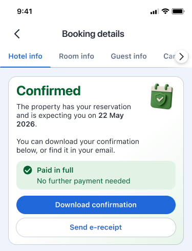
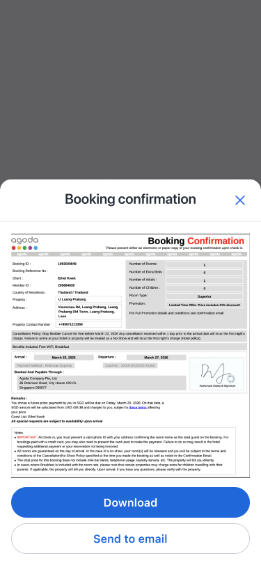

01 / The problem
The status was visible. The confidence wasn’t there.
Guests could already check their booking details and status themselves, yet many still contacted customer support to confirm that everything was valid.
The behavior suggested a trust gap rather than a discoverability problem: a system-generated “confirmed” label did not always provide enough reassurance on its own.
02 / Directional evidence
Booking reassurance was creating meaningful avoidable contact.
Figures are directional. For context, every 1% of guest handling time represents approximately US$800,000 in monetary value. The source research board notes that this data was self-extracted and may be inaccurate.
03 / Why trust breaks
Three signals pointed beyond a simple status label.
Previous booking failures, mismatched system states and incorrect booking details could all make a technically correct confirmation feel unreliable.
Past negative experiences
Issues such as allotment rejects taught some guests not to trust system-generated confirmation without human assurance.
Delayed or conflicting status
Payment deductions, missing bookings, loading errors or slow updates could contradict what guests expected to see.
Incorrect booking information
Guests who noticed incorrect details often checked the booking’s validity before attempting an amendment.
Research synthesis
Most guests who contacted support had a confirmed booking with nothing to change.
Confirmed cases with no amendment still generated approximately 2% of handling time.
Directional research only. These indicators come from different internal sources and denominators, so they should not be directly compared.
04 / Product hypothesis
If confidence—not access—is the problem…
Increase human-like assurance, show clear confirmation proof and make verification visible.
The hypothesis was that stronger reassurance would help guests trust that their booking was valid and reduce the need to contact support.
05 / Design explorations
Exploring reassurance at different moments of doubt.
The concepts strengthened the visual hierarchy around booking status, made confirmation proof portable and introduced clearer paths for contacting the property when a guest still needed reassurance.
Variants also explored different states for pay-now and buy-now-pay-later bookings, separating booking status from payment status so “confirmed” could not overpromise.
Lead with confidence, not system language.
Elevate the confirmed state, explain what it means and pair it with clear payment reassurance.

Let guests keep and share the evidence.
A previewable confirmation can be downloaded or sent to email when a status label alone is not enough.

06 / Experiment results · Ongoing
People used portable proof. Its operational impact is still being measured.
For the first experiment, we tested only the portable-proof solution: an in-app confirmation voucher that guests could view, download or send by email. The reassuring-status concept was not included in this run.
Current decision
Continue the experiment and do not take a rollout decision yet. Engagement with the voucher is proven, but there is not yet enough evidence that it reduces customer-service contact or handling time.
Calculon run 1335519 · Ongoing experiment · Results last updated 22 September 2026